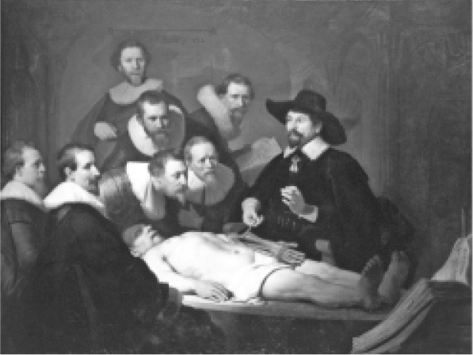

至少如果我身处英格兰，我对自己的身体并无所有权。身体确实不能成为所有权的标的物。我甚至不能支配自己的身体［参见“女王诉本瑟姆案”（2005）］。
这看起来有些奇怪。我在感知万物和侃侃而谈时，身体仿佛是属于我的。然而，当我这样觉得和谈论身体时，在法律上却是非常草率的。我实际上想表达的是我有权利（或者至少比其他人有更多的权利）来控制可能会发生在自己身体上的事情。如果主张是这样的，法律会赞成我的观点。事实上，正如我们在审视关于同意权的法律时所看到的，法律会非常强烈地赞成这种观点——只要你是一个法律上具有行为能力的成年人，身处医院而不是在性虐恋者沙龙中。
但在法律上引入将活人身体视为财产的观念，则存在问题。确实，如果换作尸体，同样存在问题，且问题由来已久，但其实它是活人身体所涉及问题的必然延续。为何我的后裔对我的尸体具有请求权，而在世的我却无权对同样的这一大堆细胞主张权利？
法律对此的厌恶有两个根源。第一个根源是来自神学的影响。法律由宗教信徒们形塑，而在他们心目中，对自己的身体主张所有权会亵渎神明。我们并没有创造自己，因此我们没有对自己身体的所有权。
这种看法（也许受到根深蒂固的本能支撑）仍然持续，但这种信念基本上已不存在。第二个根源与第一个相关，但它是康德哲学和启蒙运动的产物。这是一种对于“商品化”的憎恶。
“厌恶”“本能”“憎恶”这些词听起来不像是一本关于法律的书所应该包含的。但是在这一领域，也许法官凭直觉鲁莽行事的情形要多于其他任何人（他们也表达过很多感性的看法）。很难追寻始终如一的推理脉络，公共政策往往非常难以置信地被打扮成逻辑。
然而，我们其实很难完全摆脱财产的观念。财产的思维方式和财产的话语时不时能发挥重要作用。而且，总的来看，法院并没有精心地回避。法院一直秉持实用主义来处理这些议题。在某种程度上，将人体部位视作财产有利于解决争议，法院也确实是这么做的（在判决书中撒满限制性的胡椒粉）。总体的结果是，判决有时将人体部位视为财产，有时则特别强调人体部位并非财产。
以下是一个体现这种实用主义的例子。在“女王诉凯利案”（1999）中，英国上诉法院重申了古老而基本的法则，即未经改动的人体部位不属于财产。判决随后指出：“也许……在未来某个时候……为了审理［盗窃罪］的需要，法院可以判决人体部位属于财产，只要人体部位的用途或意义已超出它们的现状，即便它们尚未获得不一样的属性。这可能发生在以下例子中，比如将人体部位用于器官移植手术，或者是用于提取DNA（脱氧核糖核酸），或者是……用作庭审的物证展示。”这个判决体现了非凡的坦诚态度。它的意思实际上是：我们未来会赋予某物任何必要的属性，以便我们能做正确的事情。这不是坏事。获得正确的结论是至关重要的，而法律学者们往往低估了这种重要性。
德国人对独立人体部位的地位，观点非同寻常地直截了当，且始终如一。在德国人看来，它们都属于财产。而大多数其他司法管辖区纷纷尝试回避“财产”这一简单明了的标签，及其可能造成的后果。
澳大利亚联邦最高法院的做法即是一个典型。在“杜德沃德诉斯彭斯案”（1908）中，尽管坚守历史传统、认为尸体不属于财产（盗墓贼会被指控盗窃裹尸布，或被指控晦涩的关于亵渎坟墓的基督教罪行），法院指出，人们在处理尸体或尸体部位的过程中，如果通过工作使它们具备“一些不同于仅仅等待下葬的尸体所具有的属性”，便获得了继续占有的权利。
“杜德沃德案”让从皇家外科医学院盗窃人体部位的小偷遭到了报应。他们辩称，自己不应该被判犯有盗窃罪，因为没有财产被不法占有。英国上诉法院回应道：你们说的站不住脚。人体部位被防腐保存，而一些人力投入到了这一过程中。基于此，被偷走的人体部位当然属于“财产”［参见“女王诉凯利案”（1999）］。
在回避财产观念的情况下，关于活人人体部位或衍生物所有权的案件考验着法官们处理艰难问题的能力。
在美国加利福尼亚州最高法院审理的“穆尔诉加利福尼亚大学校董会案”（1990）中，原告患有白血病。他的脾脏和身体其他部位被切除，在未经患者同意的情况下，他的细胞被用于建立兼具经济价值和医学价值的细胞系。该细胞系被授予专利，带来了巨额的金钱收益，原告却分文未得。
原告的起诉特别强调，他的细胞属于被“转用于”其他用途的财产。法院不同意这一观点，其担忧在于，假如完全无辜的研究者基于善意目的对来源不明的细胞系进行转换，却要承担法律责任，医学研究将受到压制。原告还有其他救济途径：未取得同意就切除人体组织的医生将会承担法律责任，因为违反诚信义务以及未经患者同意而实施手术。但与细胞系所带来的数十亿美元收益相比，这些诉讼请求对应的赔偿数额微不足道。
在“海奇特诉洛杉矶县高等法院案”（1993）中，美国加利福尼亚州上诉法院认为，按照遗嘱处置的精液可以被视为财产，理由是提供精液的男子对于如何处置该精液有充分的话语权，正是这种话语权让精液变成财产。这种认定的效果在于，他的女友可以重新获得这些精液并将其用于本来的目的，也就是让她受精［在英国，类似的案例，例如“人类授精和胚胎研究管理局诉布拉德案”（1999）和“埃文斯诉阿米库斯医疗有限公司案”（2004），最好被视为关于生育自主权和制定法解释中的细节问题的案子。相关讨论见本书第三章］。
支配这两个判决的逻辑与其说是法律，毋宁说是政策。在“穆尔案”中，基于财产的分析总体而言是弊大于利的，因此这种分析被法院否定。而在“海奇特案”中，基于财产的分析则是利大于弊的，所以被法院采纳。
在英国上诉法院审理的“耶尔沃斯诉北布里斯托尔国民医疗服务信托案”（2010）中，由于疏忽，为在癌症化疗后生育子女而保存的精液遭到破坏。本案中的过错是显而易见的，但应该如何描述这种过错？法院判决认为，尽管制定法限制了男人对精液的用途安排，但这种限制并不意味着男人在追究疏忽责任的诉讼中不可以对精液“享有所有权”，因此，“更不用说男人对精液拥有充分的权利，由此成为精液的财产持有者”。
所有权和持有财产（照看动产）都意味着法院承认精液属于某种财产。
因此，在美国、英国以及其他国家，假如财产的定义能服务于正确的判决，人体部位和人体衍生物则被认定为财产。
法律又该如何处理涉及人体部位或人体衍生物的交易呢？例如，卖血就存在一个市场。人可不可以把自己变成“血液农场”，如牲口产奶那样卖自己的血获利？卖掉一个肾脏对还清按揭贷款有很大的帮助，还能拯救他人的生命。
如果血液和肾脏都是我的财产，为什么不呢？确实，为何这些买卖的合法性变成了对“财产”概念适用范围的莫名（正如我们所看到的）而武断的质疑？即使我的肾脏不属于财产，并且如土地法专业的律师所理解的那样，我在持有它这件事上没有权利，我仍然应该拥有比其他人多得多的权利来决定那些涉及它的事情。如果我选择每天晚上喝得烂醉，让肾脏沉浸在杜松子酒里，法律不会阻止我的行为。为什么当我要做一些有利可图且有益于社会的事情，法律却要阻止我？在很多司法管辖区，妓女可以合法卖淫。为什么她不能为了生产救命的血液制品而卖血呢？
当然，从道德的角度，对这些问题不假思索的答案是防止“商品化”，这也是一个引发无尽追问的回答。是的，这些行为是“商品化”，但那又如何？一个适当的答案也许应该用上人性尊严的话语。
很多司法管辖区都禁止人体器官和人体衍生物的商业交易。关于这一点，国际共识体现为欧洲委员会制定的《欧洲人权与生物医学公约》第21条，其中规定：“人体及人体部位不得被用作营利目的。”
器官捐献
对人体器官的需求量远远大于人体器官的供应量。

图10 伦勃朗的作品《尼古拉斯·杜尔教授的解剖学课》。人是否拥有绝对的权利来决定自己死后尸体的境遇？
一种解决思路是鼓励活体器官捐献，这主要涉及部分器官，例如肾脏。在前文中，我们已经简要讨论过这个问题。例如，在很多司法管辖区，活体捐献者无偿捐献骨髓，甚至单侧肾脏，通常都是合法的；尤其是在监管部门进行广泛的调查，确定潜在捐献者的捐献完全出于自由意志且完全了解捐献器官的全部风险后，做出捐献单侧肾脏这样重大牺牲的情形。但这显然不适用于心脏、肺以及其他器官捐献的情形。假如要移植这些器官，需要从死者的身体上摘取。
从死者的身体上摘取器官时，在法律层面有两个主要的担忧。第一个担忧事关同意，即死者或者特定情况下的死者家属是否恰当地给予了同意？第二个担忧事关死亡，即死者是否已真正地、不可逆地死亡？
在大多数国家，人们决定死后尸体处置的资格主要受到制定法的管制。这些制定法基本上都倾向于规定自主权延伸到坟墓，因此我们每个人都有资格决定自己是被土葬、火葬还是被循环利用。
若干法律机制被用于确保自主权得到尊重。在某些司法管辖区，如果你未就如何处置自己的尸体给出说明，利用你的任何器官都是违法的。因此在这些司法管辖区，捐献器官需要捐献者“选择加入”。另一些司法管辖区则规定，假如你反对捐献器官，需要明确表达自己的意见，对此保持沉默则会被推定为同意（这也被称作“选择退出”模式）。还有一些司法管辖区要求人们做出选择，例如，将其作为申领驾照的必要条件（这也被称作“强制选择”模式）。围绕以上法律选项的可接受性，伦理学家们已有相当多的辩论，政治家们和医生们则争论这些法律选项对于提高器官捐献率的效果。然而，它们在法律层面却并不那么吸引人。
在法律层面更令人感兴趣的问题包括：死亡的定义（本书第九章已经讨论过）（改变了从“有心跳捐献者”身上摘取器官的适当性），有时给出的关于从永久植物状态患者身上获得器官问题的建言（目前在全球范围内这都不合法，这就好比从一个被麻醉后实施阑尾切除术的健康人身上摘取器官是不合法的），以及从无脑畸形的儿童身上获得器官问题的建言（目前这种情形在所有国家都符合死亡判定标准，但条理清晰的证成需要快马加鞭，因为这种疾病的预后如此清晰而不幸）。
世界卫生组织制定的指南体现了关于保障措施的广泛国际共识，这些措施适用于从有心跳捐献者的身体摘取器官的情形，其中就包括禁止从事人体器官移植的医生对捐献者的死亡进行判定，这也是为了预防某些显而易见的罪恶。
知识产权
如果有观点认为一家生物技术公司有权指着一幅基因图谱，说“这是我们的，只有我能用这段基因序列赚钱”，这将引起各种政治的、伦理的乃至宗教的骚动不安。
正如人们从“穆尔案”（前述）中所预期的那样，美国人对于这个问题的态度比欧洲人要更加自由放任。至少在这方面，美国人根深蒂固的自由市场倾向胜过他们的宗教保守主义。美国联邦最高法院赞成给转基因嗜油细菌授予专利，并指出立法者意图使专利法涵盖“普天之下人类制造的任何事物”。在这一语境下，“人类制造的”包括了人类对天然存在的核酸的操控［参见“戴蒙德诉查克拉巴蒂案”（1980）］。
从一只老鼠身上可以清晰看出美国与欧洲的不同。美国哈佛大学培养出一种老鼠（被称作“肿瘤鼠”），其被视为一枚生物定时炸弹。这种老鼠的DNA带有一种人类肿瘤的基因，因此会不可避免地患上癌症。哈佛大学在美国顺利地申请到专利，欧洲人对此则慎重得多。这种老鼠在欧洲最终获得了专利，但申请的过程充满了争议，两个争点分别是授予生物体专利是否违背道德准则，以及授予动物物种以专利是否违法（两项反对意见的依据都是《欧洲专利公约》）。
与美国相比，欧洲给人类基因序列授予专利的数量要少得多。但是一度，欧洲仿佛对此有所松绑。
欧洲人认为DNA不是“生命”，因此关于“扮演上帝角色”式的反对意见相应减少。但据说，授予这种专利可能给研究资金带来灾难性影响。然而，欧洲人在能否给人体组织授予专利的问题上，维持了固有的保守立场。如今，这种保守立场被写入欧盟1998年制定的关于生物技术领域发明保护的指令，该指令明确了未来法律和伦理辩论的战线。指令的第5条第1款规定：“处于形成和发展不同阶段的人体，以及单纯发现人体的某一要素，包括某个基因的完整或部分序列在内，不构成可授予专利的发明。”指令的第6条第1款还规定：“如果发明的商业性利用有违公共秩序或道德，该发明应被视为不可授予专利……以下各事项尤其应被视为不可授予专利：……克隆人的程序……为工业或商业目的使用人类胚胎。”在大多数司法管辖区，这些战线的总体立场是相似的。
一位名人下榻饭店以后，女服务员从枕头上收集到他的头皮屑，并卖给一家全国性的报社。该报打算通过分析DNA来确定这位名人是不是那个引人注目的私生子的生父。这位名人能否主张头皮屑属于他的财产，而要求物归原主？头皮屑到底是不是财产？假如头皮屑属于财产，那么名人是否已经抛弃了它，从而使任何拾获它的人都有权持有它？
这个例子距离医事法的现实世界并不遥远。世界各地许多医院的储藏室中都存有人体组织，它们是从手术和解剖过程中合法地获得的，而这些人体组织的保存却未曾获得它们曾经的“所有者”的明确同意。这些人体组织同样能揭示有价值的信息，这些信息对医学研究者有价值，对保险公司也有潜在的价值。通过扫描基因，保险公司可以对作为人体组织供体的人的保险风险状况进行评估。
头皮屑案例和医院储藏室案例的情况非常相似。医院储藏室中的样本更大，而这并不应该成为以区别于头皮屑案例的方式对待它的正当理由。然而，很大可能是由于样本的大小，世界各国的律师更愿意为医院储藏室的人体样本是否属于财产以及能否被当作财产来处置而殚精竭虑，头皮屑则没有得到如此关注。
我们已经看到将人体部位视作财产可能导致的问题，而这些问题同时存在于生者和死者的情形。我们已经看到，如果有助于得到正确的答案，法律会秉持实用主义而乐见它们被称作“财产”。但在前面提到的两个案例中，确无必要着手使用财产的话语来保护那些亟须保护的利益。重要的不是人体组织本身，而是人体组织所承载的信息。最好的论理当然是关于保密或隐私的法律，而不是财产法。
很多司法管辖区的律师和立法者逐渐意识到了这一点。例如，英国的《人体组织法案》（2004）规定，未经授权而分析DNA的行为被特意确认为一种危害。这无疑是一条阳关道：为伤害后果定制救济，而不是把难题塞进那些陈旧的人造盒子（例如名叫“财产”的盒子），使法律变得复杂而扭曲。